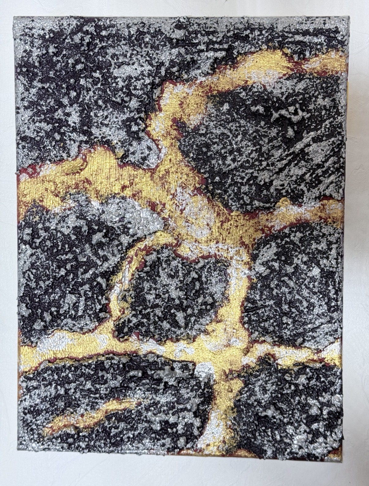
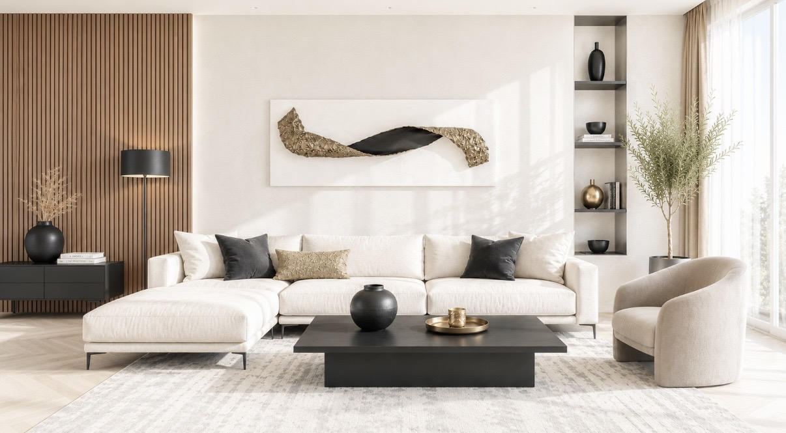
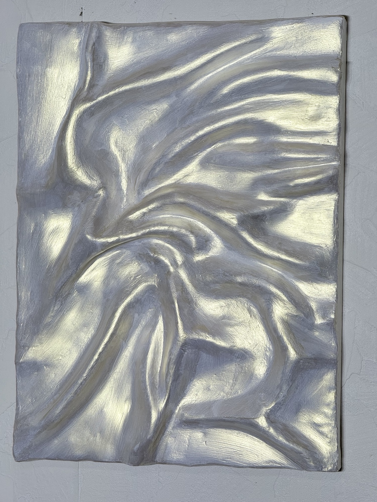
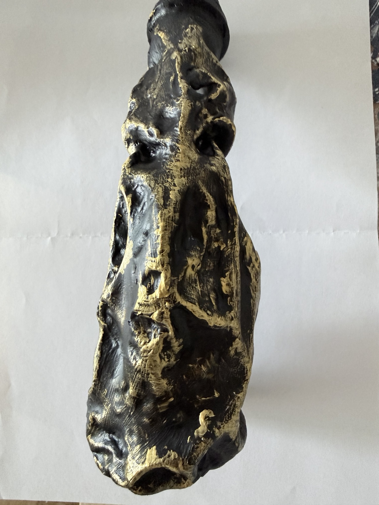
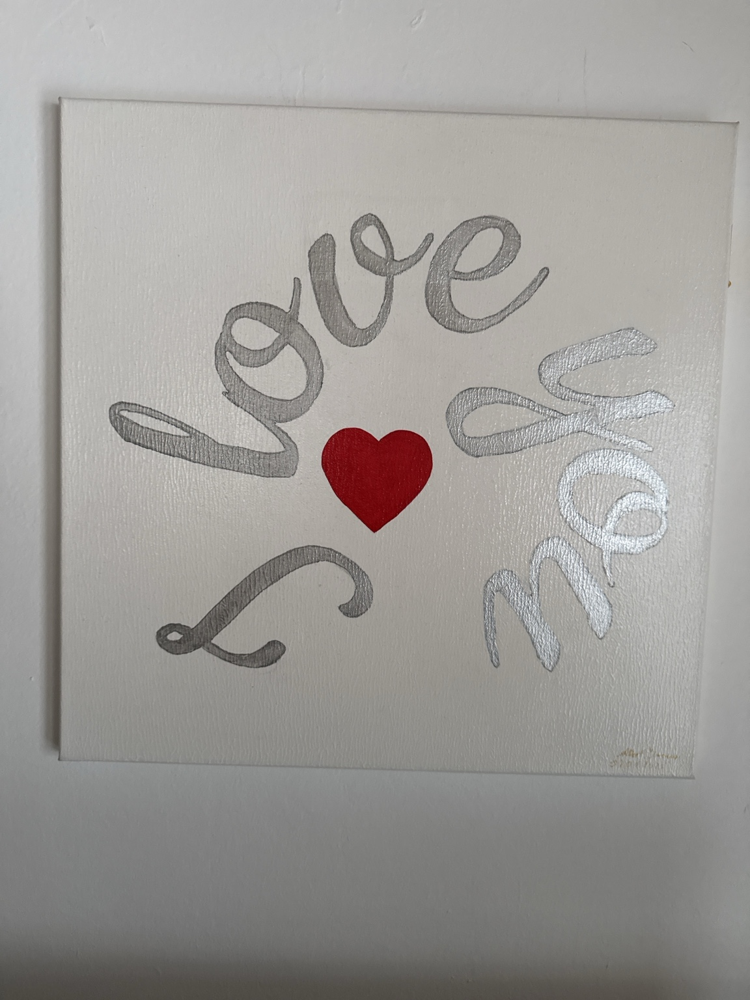
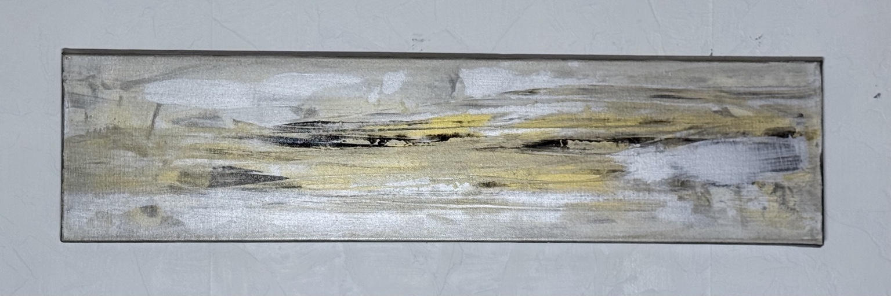

＋ Vergrößern
Ein ausdrucksstarkes Wandrelief, in dem eine plastische Goldstruktur auf tiefes
Schwarz trifft. Die kraftvolle Form erinnert an fließendes Metall oder eine
geologische Formation. Licht und Schatten verstärken die räumliche Tiefe und
lassen das handgefertigte Unikat immer wieder anders wirken.

＋ Vergrößern
Die Wohnraumansicht zeigt, wie das horizontale Relief mit seinem tiefschwarzen
Zentrum und den bewegten Goldstrukturen zum eleganten Blickfang wird. Seine
plastische Oberfläche reagiert auf das Tageslicht und verbindet einen starken
Kontrast mit ruhiger Raumwirkung.

＋ Vergrößern
Kühle Silbertöne, dunkle Kontraste und lebendige Strukturen erzeugen eine
dynamische Bewegung. Die reliefartige Oberfläche erinnert an Gestein,
Landschaftsschichten oder urbane Spuren. Der metallische Glanz verleiht dem
abstrakten Werk eine moderne und elegante Ausstrahlung.

＋ Vergrößern
Die organisch geformte Skulptur verbindet tiefes Schwarz mit unregelmäßig
gesetzten Goldspuren. Vertiefungen, Kanten und glänzende Partien verändern sich
mit dem Blickwinkel und geben dem handgeformten Unikat eine kraftvolle Präsenz.

＋ Vergrößern
Silberne Schriftzüge umkreisen ein leuchtend rotes Herz und formen die Botschaft
„Love You More“. Die freie Linienführung und der klare Farbkontrast verleihen dem
Werk eine persönliche, moderne und zugleich verspielte Ausstrahlung.

＋ Vergrößern
Warme Goldtöne und eine fließende, plastische Struktur verbinden Ruhe mit
zeitloser Eleganz. Je nach Lichteinfall entstehen feine Reflexe und wechselnde
Schatten. Ein harmonisches Unikat, das einem Raum Wärme, Tiefe und einen edlen
Akzent verleiht.